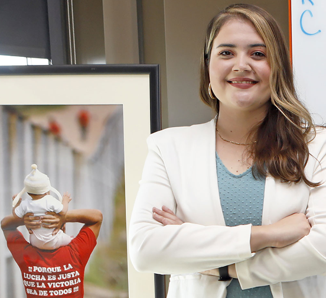

Trabajo social
Los estudiantes de trabajo social de UTEP con pasión por mejorar la vida de los demás reciben una experiencia educativa única en una comunidad claramente binacional y bicultural a través de cursos estimulantes, tecnología de simulación y trabajo de campo.
Oportunidades de Carrera
Los estudiantes de UTEP se gradúan con las habilidades y el conocimiento para practicar el trabajo social en una amplia variedad de entornos, como escuelas, hospitales y clínicas, agencias de bienestar infantil y entornos legales y penitenciarios.

CONOZCA A JESSICAJessica Ayala ha marcado una diferencia en la vida de las personas trabajando como consejera escolar y administradora de casos de realojamiento rápido. Como coordinadora del proyecto Cuidate El Paso: Protegiendo a nuestra comunidad contra el VPH, el objetivo de Jessica es aumentar las tasas de vacunación contra el VPH y reducir los cánceres relacionados con el VPH en El Paso.
Jessica Ayala
Trabajo social en el trabajo 2018, trabajo social en el trabajo 2021